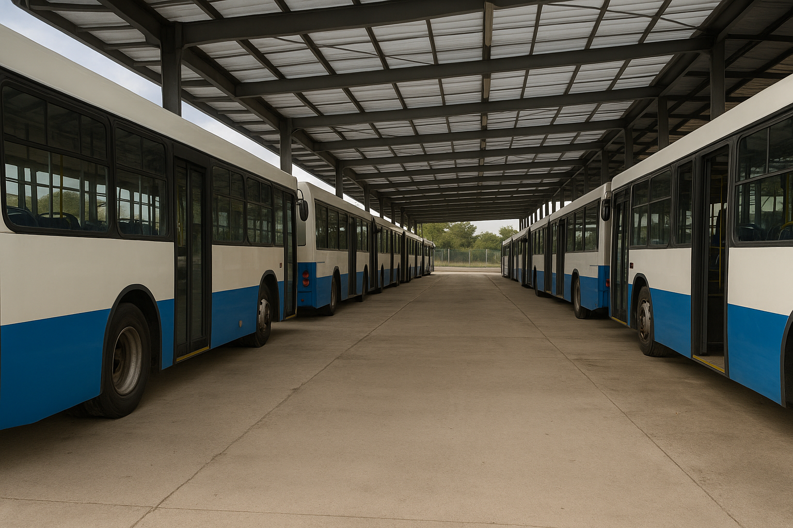

Bus station “KiBus Storage” (Kora)
A paved KiBus bus storage base in Kora with column-supported canopies to protect vehicles from precipitation; a key node for pre-trip checks and layover parking of rolling stock.
History
The “Storage” station in Kora was built shortly after KiBus was founded—during 2003–2004—as a fast infrastructure site for the first batches of buses. The initial configuration was an asphalt lot and plastic panel canopies on columns that protect against rain and wet snow. This “quick park” format made it possible to launch test and early city routes without waiting for the construction of capital hangars.
Purpose
- Storage and layover of buses off-shift.
- Pre-trip preparation: exterior inspection, checking lights and route boards/displays, tire pressure.
- Fast minor work at an open service post (adjustments, consumables).
- Interior cleaning and preparation for the next departure.
Infrastructure
The basic station layout includes:
- Open parking rows with markings for maneuvering long vehicles.
- Canopies made of plastic panels on supports—protecting the roof and windshield area from precipitation and icing.
- Quick-cleaning zone and distribution of consumable supplies.
- Night lighting of the lot and perimeter.
- Access roads for simultaneous entry/exit of multiple buses.

Role in operations
The station in Kora works as the “first buffer” between the city and the depot: buses return here after a shift, and inspections and preparations for the next departure are performed here. The minimalist but thoughtful lot format reduced vehicle downtime and simplified maintenance for early KiBus 100/300 series and intercity H vehicles.
2010–2025 period
As the fleet developed, the core function stayed the same: storage, pre-trip checks, cleaning. For the city 1200 series, since 2021 the station also checks the operation of long information screens (route/stops/time). The station remains in demand due to simple logistics and proximity to key city routes.
Significance
- Schedule stability — fast “arrive–prepare–depart” cycles reduce the risk of missed runs.
- Fleet preservation — canopies and a prepared lot reduce weather wear.
- Operational speed — a convenient entry/exit layout for quick replacements on the line.
See also
Notes
- The “KiBus Storage” station has historically been described as a “quick park” with an asphalt lot and canopies; further development proceeded without major capital rebuilds.